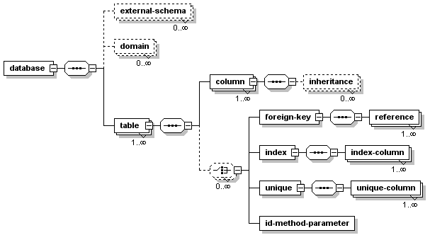

The Torque Database Schema Reference attempts to explain what the different elements and attributes are when defining your own database schema. In addition I will attempt to explain which attributes mean what in the different databases that are currently supported.

Some of the following examples are taken from the project-schema.xml document in the src/conf/torque/schema.
The database element and its relevant attributes.
<database
name="MY_DATABASE"
defaultIdMethod="idBroker"
package="com.myapp.om"
baseClass="com.myapp.om.BaseClass"
basePeer="com.myapp.om.BasePeer">
<table name="SIMPLE">
<!-- table info goes here -->
</table>
</database>
The database element has 8 attributes associated with it, they are:
| name | The name of the database being referenced |
| defaultIdMethod | How will the primary keys be created, defaults to "none" |
| defaultJavaType | Default type of columns in the database (object or primitive, defaults to primitive) |
| package | Used for OM Peer generation |
| baseClass | Used for OM generation |
| basePeer | Used for OM Peer generation |
| defaultJavaNamingMethod | Indicates how a schema table or column name is mapped to a Java class or method name respectively |
| heavyIndexing | Adds extra indices for multi-part primary key
columns. true or false, defaults to false.
For databases like MySQL, values in a where clause
must match key part order from the left to right.
So, in the key definition PRIMARY KEY (FOO_ID,
BAR_ID), FOO_ID must be
the first element used in the where
clause of the SQL query used against this table for
the primary key index to be used. This feature could
cause problems under MySQL with heavily indexed
tables, by causing too many indices to be created,
overrunning MySQL's table limit. |
The database element can contain the following elements:
| external-schema | 0 or more |
| domain | 0 or more |
| table | 1 or more |
By defining this attribute at the database level it applies the defaultIdMethod to those tables which do not have an idMethod attribute defined. The attribute defaultIdMethod has 5 possible values, they are:
| idbroker | This allows Torque to generate the IDs through its IDBroker Service |
| native | Torque will determine how the database will auto-generate IDs |
| none | Typically used if you do not want IDs generated |
This attribute determines how table or column names, from the name attribute of the table or column element, are converted to a Java class or method name respectively when creating the OM Java objects. defaultJavaNamingMethod can contain 3 different values:
| nochange | Indicates no change is performed. |
| underscore | Underscores are removed, First letter is capitalized, first letter after an underscore is capitalized, the rest of the letters are converted to lowercase. |
| javaname | Same as underscore, but no letters are converted to lowercase. |
The base package in which this database will generate the Object Models associated with it. This overrides the targetPackage property in the Torque build.properties file.
Includes another schema file.
<external-schema
filename="extext-schema.xml" />
Domains are used to define attributes for columns.
<domain
name="amount"
type="NUMERIC"
size="10"
scale="2"
default="0"
description="amount domain" />
The table element and its relevant attributes
<table
name="MY_TABLE"
javaName="table"
idMethod="idbroker"
skipSql="false"
baseClass="com.myapp.om.table.BaseClass"
basePeer="com.myapp.om.table.BasePeer"
javaNamingMethod="underscore"
description="Table for Torque tests">
<!-- column information here -->
</table>
The table element has 13 attributes associated with it, they are:
| name | The name of the table being referenced |
| javaName | How this table will be referenced in Java |
| idMethod | How will the primary keys be created, defaults to "null" |
| skipSql | Whether or not to skip SQL generation for this reference |
| abstract | Whether or not to generate the class as Abstract or not |
| baseClass | Used for OM Peer generation |
| basePeer | Used for OM Peer generation |
| alias | The table alias |
| interface | The interface attribute specifies an interface that should
be referenced in the implements section of the
generated extension class. If this is a fully qualified
class name (i. e. the string contains dots), the interface
will simply be implemented by the extension object. If the
interface is a simple class name (without dots), an empty
interface file will be generated in the extension object
package.
When this attribute is used, all methods that normally
would return the extension object type will now return the
interface type. This feature allows to use Torque generated
classes in the context of other applications or APIs. |
| javaNamingMethod | Specifies how the name attribute is converted to the Java class name of the corresponding OM object. This attribute overrides the defaultJavaNamingMethod attribute of the database element |
| heavyIndexing | ? (true or false) |
| description | Used for doc generation |
The table element can contain the following elements:
| column | 1 or more |
| foreign-key | 0 or more |
| index | 0 or more |
| unique | 0 or more |
| id-method-parameter | 0 or more |
This is the Java class name to use when generating the Table or column. If this is missing the Java name is generated in the following manner:
Underscores are removed, first letter and first letter after each underscore is uppercased, all other letters are lowercased. So YOUR_TABLE_NAME would become YourTableName.
The column element and its relevant attributes
<column
name="MY_COLUMN"
javaName="Column"
primaryKey="true"
required="true"
size="4"
type="VARCHAR"
javaNamingMethod="underscore">
<!-- inheritance info if necessary -->
</column>
The column element has 13 attributes associated with it, they are:
| name | The name of the column being referenced |
| javaName | How this column will be referred to in Java |
| primaryKey | Is this a primary key or not (true or false, defaults to false) |
| required | Whether a value is required in this field (true or false, defaults to false) |
| type | What type of column is it? Covered below, defaults to VARCHAR |
| javaType | The type of the column in Java (object or primitive) |
| size | How many characters or digits can be stored? |
| default | Default value to insert into field if it is missing. |
| autoIncrement | Whether or not to auto-increment this field (true or false, defaults to false) |
| inheritance | ? (single or false, defaults to false) |
| inputValidator | ? |
| javaNamingMethod | Specifies how the name attribute is converted to the Java class name of the corresponding OM object. This attribute overrides the defaultJavaNamingMethod attribute of the database element |
| description | Used for doc generation |
The column element can contain the following elements:
| inheritance | 0 or more |
The inheritance element and its relevant attributes
<inheritance key="key"
class="classname"
extends="mybase"/>
The inheritance element has 3 attributes associated with it, they are:
| key | ? |
| class | ? |
| extends | ? |
The inheritance element can not contain other elements.
The foreign-key element and its relevant attributes
<foreign-key foreignTable="MY_TABLE"
name="MY_TABLE_FK"
onUpdate="none"
onDelete="none">
<!-- reference info -->
</foreign-key>
The foreign-key element has 4 attributes associated with it, they are:
| foreignTable | The name of the table being referenced |
| name | The name of the foreign key |
| onUpdate | The action to take when the referenced value in foreignTable is updated |
| onDelete | The action to take when the referenced value in foreignTable is deleted |
The foreign-key element can contain the following elements:
| reference | 1 or more |
The reference element and its relevant attributes
<reference local="FK_TABLE_ID" foreign="PK_COLUMN_ID"/>
The reference element has 2 attributes associated with it, they are:
| local | The local reference |
| foreign | The foreign key reference |
The reference element can not contain other elements.
The index element and its relevant attributes
<index name="MY_INDEX">
<!-- index-column info -->
</index>
The index element has 1 attribute associated with it, it is:
| name | The name of the index |
The index element can contain the following elements:
| index-column | 1 or more |
The index-column element and its relevant attributes
<index-column name="INDEX_COLUMN"/>
The index-column element has 2 attributes associated with it, they are:
| name | The name of the indexed column |
| size | This attribute is not used and will be removed in a future version of the dtd. |
The index-column element can not contain other elements.
The unique element and its relevant attributes
<unique name="MY_UNIQUE">
<!-- unique-column info -->
</unique>
The unique element has 1 attribute associated with it, it is:
| name | The name of the unique constraint |
The unique element can contain the following elements:
| unique-column | 1 or more |